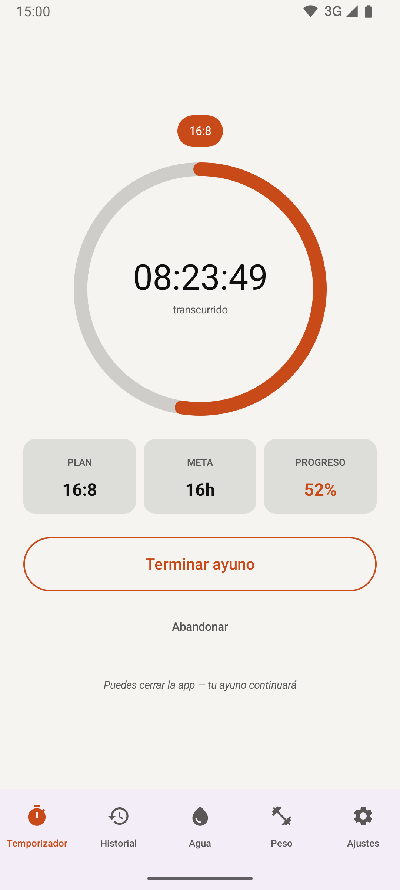
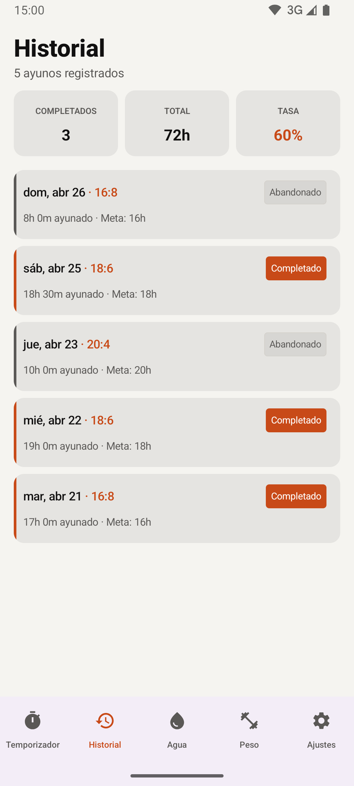
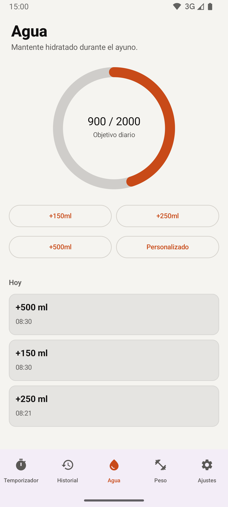
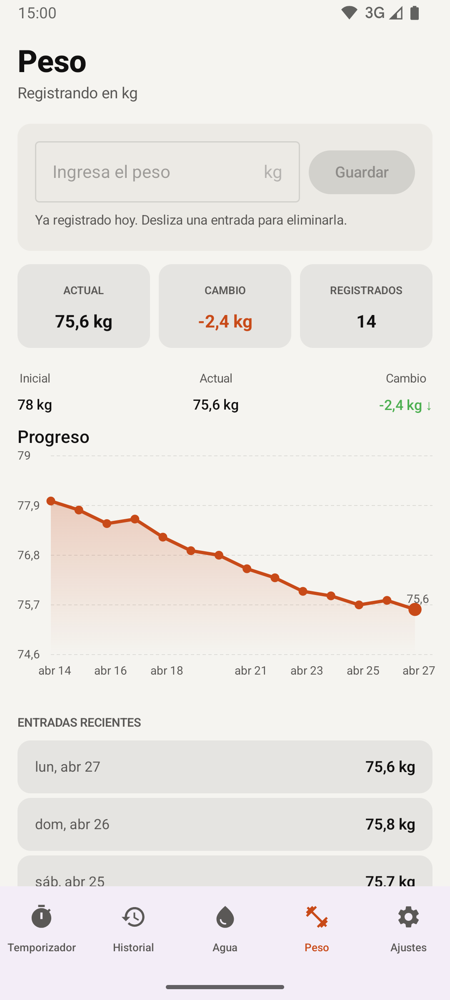

Cuando practiqué ayuno intermitente no encontré ninguna app que me gustara: todas pedían cuenta, formularios de registro larguísimos u onboardings eternos. Así que construí una que encajara con lo que de verdad hace falta. Un temporizador, un histórico y poco más.




Quien ayuna no necesita una app que le venda planes premium ni que le obligue a registrarse para empezar. Necesita arrancar un temporizador en dos toques y que ese registro siga ahí dentro de un año. Las apps existentes mezclaban tracking, comunidad, coaching y muros de pago; cada interacción cargaba con peso ajeno al gesto que el usuario fue a hacer.
Vive en Google Play. Mantenida por una sola persona, sin servidor que pagar ni cuenta de usuario que migrar. El alcance acotado es lo que la hace sostenible: nada de la app requiere atención semanal para seguir funcionando el año que viene.
Ver en Play StoreLo que se decide no construir tiene tanto peso como lo que sí. Decir que no a la suscripción decidió la arquitectura: sin cuenta, sin servidor, sin atadura.